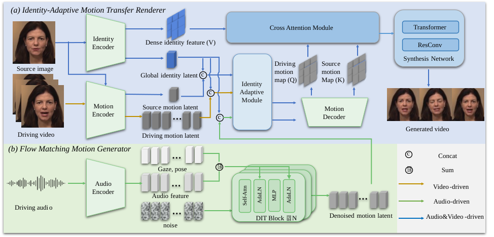

Diverse Audio-Driven Generation
Using nerfies you can create fun visual effects. This Dolly zoom effect would be impossible without nerfies since it would require going through a wall.
Talking face generation aims to synthesize realistic speaking portraits from a single image, yet existing methods often rely on explicit optical flow and local warping, which fail to model complex global motions and cause identity drift. We present IMTalker, a novel framework that achieves efficient and high-fidelity talking face generation through implicit motion transfer. The core idea is to replace traditional flow-based warping with a cross-attention mechanism that implicitly models motion discrepancy and identity alignment within a unified latent space, enabling robust global motion rendering. To further preserve speaker identity during cross-identity reenactment, we introduce an Identity-Adaptive Module that projects motion latents into personalized spaces, ensuring clear disentanglement between motion and identity. In addition, a lightweight Flow-Matching Motion Generator produces vivid and controllable implicit motion vectors from audio, pose, and gaze cues. Extensive experiments demonstrate that IMTalker surpasses prior methods in motion accuracy, identity preservation, and audio–lip synchronization, achieving state-of-the-art quality with superior efficiency, operating at 40 FPS for video-driven and 42 FPS for audio-driven generation on an RTX 4090 GPU. We will release our code and pre-trained models to facilitate applications and future research.

Given a source image, an Identity Encoder and Motion Encoder extract identity features and source motion. A driving motion latent is either extracted from video by the Motion Encoder or synthesized from audio by a Flow-Matching Motion Generator. Both motion latents are then personalized by the Identity-Adaptive Module. Subsequently, the Implicit Motion Transfer Module uses these personalized latents and fid to generate aligned features via a motion decoder and cross-attention. Finally, the Synthesis Network renders these aligned features into the final photorealistic image.
Using nerfies you can create fun visual effects. This Dolly zoom effect would be impossible without nerfies since it would require going through a wall.
As a byproduct of our method, we can also solve the matting problem by ignoring samples that fall outside of a bounding box during rendering.
As a byproduct of our method, we can also solve the matting problem by ignoring samples that fall outside of a bounding box during rendering.
Using nerfies you can create fun visual effects. This Dolly zoom effect would be impossible without nerfies since it would require going through a wall.
Using nerfies you can create fun visual effects. This Dolly zoom effect would be impossible without nerfies since it would require going through a wall.
Using nerfies you can create fun visual effects. This Dolly zoom effect would be impossible without nerfies since it would require going through a wall.
Using nerfies you can create fun visual effects. This Dolly zoom effect would be impossible without nerfies since it would require going through a wall.
@article{park2021nerfies,
author = {Park, Keunhong and Sinha, Utkarsh and Barron, Jonathan T. and Bouaziz, Sofien and Goldman, Dan B and Seitz, Steven M. and Martin-Brualla, Ricardo},
title = {Nerfies: Deformable Neural Radiance Fields},
journal = {ICCV},
year = {2021},
}